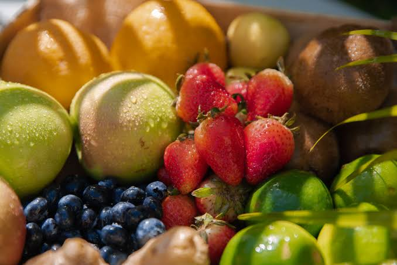

Fruits are the seed-bearing structures that develop from the ovaries of flowering plants after fertilization, acting as a crucial botanical mechanism for plant reproduction and seed dispersal. From a scientific standpoint, anything containing seeds is a fruit—including savory garden favorites like tomatoes, cucumbers, and avocados. They are broadly grouped into simple fruits (like single-seeded peaches or many-seeded apples), aggregate fruits (like raspberries, which form from one flower with multiple ovaries), and multiple fruits (like pineapples, which merge from a cluster of distinct flowers). Beyond their biological purpose, fruits are vital to the human diet because they are packed with essential vitamins like Vitamin C, minerals like potassium, and dietary fiber that supports gut health and prevents blood sugar spikes. Because some fruits continue to ripen after being picked by releasing a natural gas called ethylene while others do not, understanding their basic biology helps us properly store, harvest, and enjoy them at peak freshness.